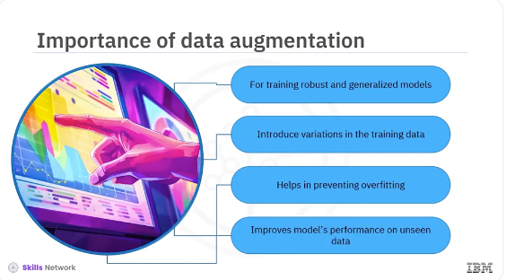
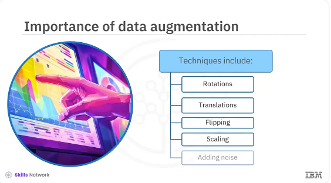
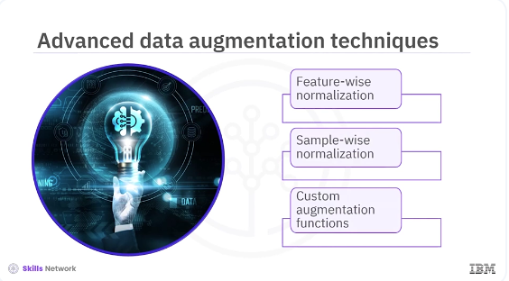

Data Augmentation Techniques

Welcome to this video on data augmentation techniques that improve model generalization. After watching this video you'll be able to, describe data augmentation techniques for improving model generalization. Implement data augmentation using Keras. Data augmentation is crucial for training robust and generalized models. By introducing variations in the training data, models learn to recognize patterns. This helps prevent overfitting and improves the model's performance on unseen data.

Data augmentation techniques include rotations, translations, flipping, scaling and adding noise.
Let's start with some basic data augmentation techniques. You will use Keras' Image Data Generator class to apply these transformations. Let's see an example of how to apply common augmentations like rotation, width shift, height shift and horizontal flip.
pyenv activate venv3.10.4
from matplotlib import pyplot as plt
from tensorflow.keras.preprocessing.image import ImageDataGenerator
# Create an instance of ImageDataGenerator with augmentation options
datagen = ImageDataGenerator(
rotation_range=40,
width_shift_range=0.2,
height_shift_range=0.2,
shear_range=0.2,
zoom_range=0.2,
horizontal_flip=True,
fill_mode='nearest'
)
# Load a sample image and reshape it
from tensorflow.keras.preprocessing import image
img = image.load_img('sample.jpg')
x = image.img_to_array(img)
x = x.reshape((1,) + x.shape)
x.shape
# Generate batches of augmented images
i = 0
for batch in datagen.flow(x, batch_size=1):
plt.figure(i)
imgplot = plt.imshow(image.array_to_img(batch[0]))
plt.show()
The code ImageDataGenerator initializes the data generator with various augmentation options such as rotation, width shift, height shift, shear, zoom and horizontal flip. Image.load _image (sample.jpg) loads a sample image. Image to array converts the image to an array. The code reshapes the image array to include a batch dimension. This code generates batches of augmented images from the input image. Finally, the image plot displays the augmented images.

In addition to basic augmentations, Keras allows for more advanced techniques like feature-wise normalization, sample-wise normalization, and applying custom augmentation functions.
# Create an instance of ImageDataGenerator with advanced options
datagen = ImageDataGenerator(
featurewise_center=True,
featurewise_std_normalization=True,
samplewise_center=True,
samplewise_std_normalization=True
)
# Compute the mean and standard deviation on a dataset of images
datagen.fit(training_images)
# Generate batches of normalized images
i = 0
for batch in datagen.flow(training_images, batch_size=32):
plt.figure(i)
imgplot = plt.imshow(image.array_to_img(batch[0]))
i += 1
if i % 4 == 0:
break
plt.show()
Let's see an example of using feature-wise and sample-wise normalization. The featurewise_center parameter sets the mean of the dataset to 0. The parameter featurewise_std_normalization normalizes the dataset to have a standard deviation of 1. The samplewise_center parameter sets the mean of each sample to 0.
The samplewise_std_normalization parameter normalizes each sample to have a standard deviation of 1. The datagen.fit(training_images) computes the mean and standard deviation on a dataset of images. The datagen.flow(training_images, batch_size=32) generates normalized images from the training set.
import numpy as np
def add_random_noise(image):
noise = np.random.normal(0, 0.1, image.shape)
return image + noise
# Create an instance of ImageDataGenerator with custom augmentation
datagen = ImageDataGenerator(preprocessing_function=add_random_noise)
# Generate batches of augmented images
i = 0
for batch in datagen.flow(training_images, batch_size=32):
plt.figure(i)
imgplot = plt.imshow(image.array_to_img(batch[0]))
i += 1
if i % 4 == 0:
break
plt.show()
Keras allows custom augmentation functions giving you complete control over the process. You can define your own functions to apply specific transformations. Let's see an example of custom augmentation function that adds random noise to images. The parameter adds_random_noise and defines a function that adds random noise to an image.
The code ImageDataGenerator preprocessing_function=add_random_noise initializes the data generator with the custom augmentation function. The code datagen.flow training_images, batch_size=32, generates batches of augmented images with added noise. In this video, you learned various data augmentation techniques using Keras, from basic augmentations like rotation and flipping to advanced techniques like normalization and custom functions. By incorporating these techniques into your training pipeline, you can improve the generalization ability of your models and achieve better performance on unseen data.